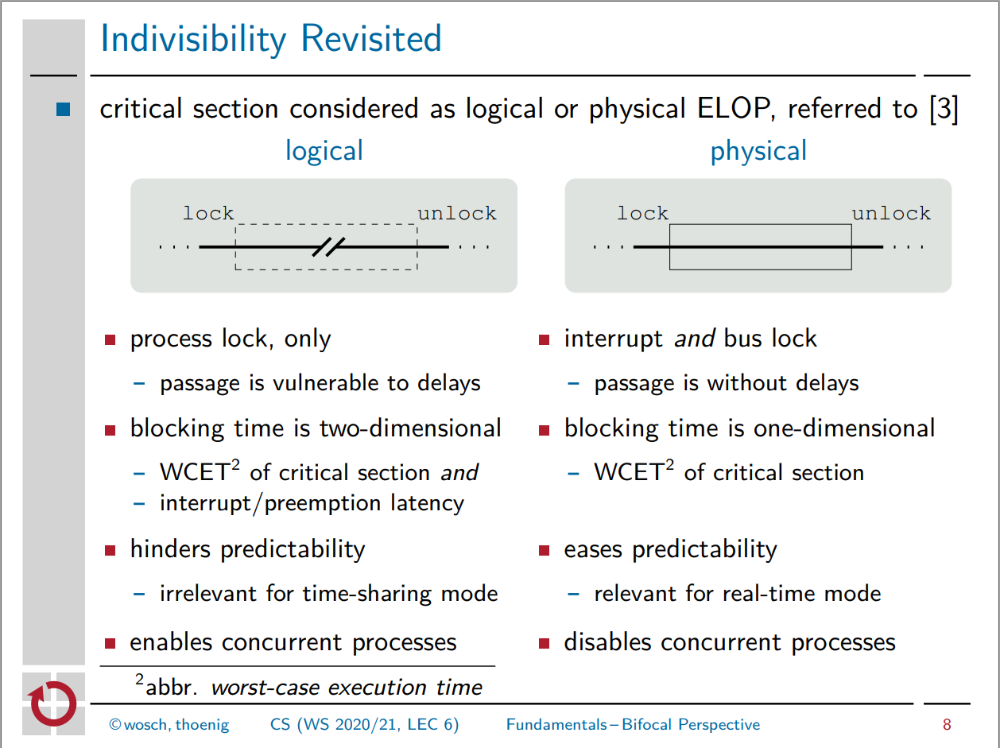
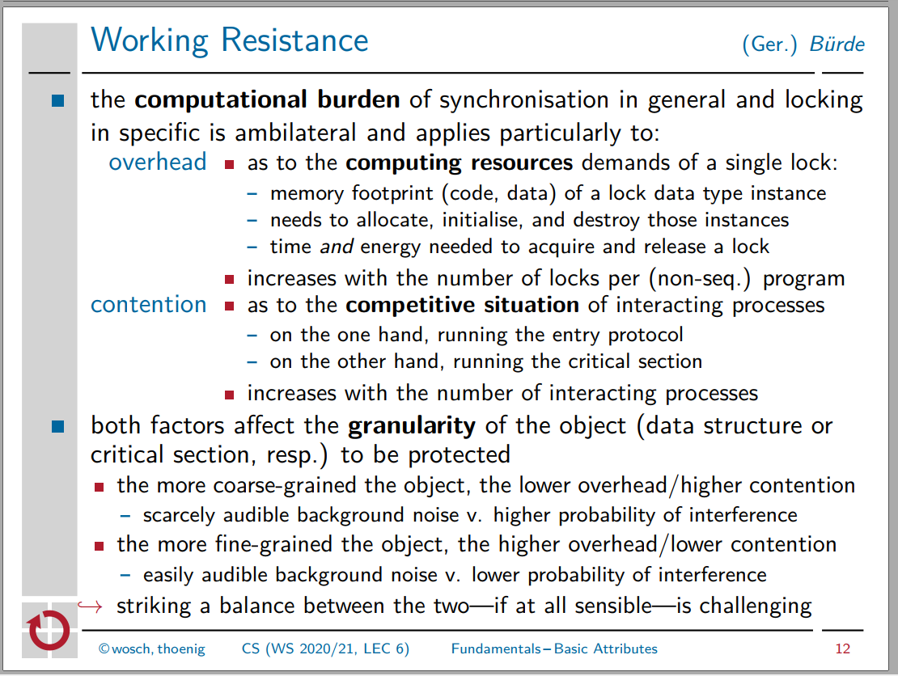

Probleme:
priority inversion:
lock holder preemption: Problem, dass der Prozess, der Lock hält, verdrängt wird


Je größer der kritische Abschnitt, desto
Je kleiner der kritische Abschnitt, desto
⇒ Informatikfolklore "kritische Abschnitte so klein wie möglich" zu pauschal!
Feingranulare krit. Abschnitte ähneln nichtblock. Synchr. sowieso ⇒ lieber nichtblock. Synchr. verwenden
Spinlocks: Befehlssatzebene benutzen zum busy-waiten
Lese-/Schreibsperren
N an Prozessen; kompliziert für N > 2Umlaufsperren mit atomaren Befehlen (CAS, TAS, LL/SC, ...)
Gemeinsame Nachteile:
Sleeping locks: Syscalls zum passiven Warten nutzen ⇒ Syscalloverhead, grobe kritische Abschnitte wichtig
Benchmark: kein echter Gewinner
#Prozesse > #CPU-Kerne (dann wohl zu viel Prioritätsverletzung mit Planer?)pthread Mutexe erstaunlich schnell trotz Syscallsstruct lock_t { bool want[2]; bool turn; }
Dekker
void lock(lock_t *bolt) {
bolt->want[self] = true; // I want to enter
while(bolt->want[other]) { // while the other one also wants to enter
if (bolt->turn != self) { // if it's their turn _for entering_, ...
bolt->want[self] = false; // back off with my intention
// to allow the other one to enter
while (bolt->turn != self); // wait until it's my turn
// (the other one now locked and unlocked)
bolt->want[self] = true;
}
}
}
void unlock(lock_t *bolt) {
bolt->want[self] = false;
bolt->turn = other;
}
Peterson Lock
void lock(lock_t *bolt) {
bolt->want[self] = true;
bolt->turn = self; // altruistic: my turn _for waiting_
while (bolt->want[other] && bolt->turn == self); // loop if the other one wants to enter
// and it's my turn of waiting
}
void lock(lock_t *bolt) {
bolt->want[self] = false;
}
Beachte: bolt->turn hat unterschiedliche Semantik bei Dekker bzw. Peterson ("for entering" bzw. "for waiting").
Kessel: single-writer anstatt wie oben lesend+schreibend auf gemeinsame Variable (Cache-ineffizient)
void unlock(lock_t *bolt) {
bolt->busy = false;
}
void lock(lock_t *bolt) {
// unconditionally write 1; loop if 1 before
while (TAS(&bolt->busy));
}
N - 1 folgende Cachemisses/-update requestsvoid lock(lock_t *bolt) {
while (!CAS(&bolt->busy, false, true));
}
void lock(lock_t *bolt) {
do {
while (bolt->busy);
} while (!CAS(&bolt->busy, false, true));
}
void lock(lock_t *bolt) {
// back off while busy-as-read or CAS failed
// useful for processors without caches, unneccesary for processors with caches
while(bolt->busy || !CAS(&bolt->busy, false, true)) {
ɛ = backoff(ɛ, self);
}
}
void lock(lock_t *bolt) {
// loop while busy-as-read or (CAS failed and then back offed)
while (bolt->busy || (!CAS(&bolt->busy, false, true) && ɛ = backoff(ɛ, lf), true));
}
backoff(ɛ, self) statische (konstante Funktion), dynamische Backoffzeit
while (counter--); oder mit Hardwaretimeout + HALT` Instruktion (nur privilegierter Modus)struct lock_t {
bool busy;
int this;
int next;
}
void lock(lock_t *bolt) {
int self = FAA(&bolt->next, 1);
if (self < bolt->this) {
// crit. sect. exec. time
backoff((bolt->this - self) * cset);
while (bolt->this < self);
}
}
void unlock(lock_t *bolt) {
FAA(&bolt->this, 1); // actually, divisible RMW would be sufficient
}
Vorteile:
Nachteile:
false sharing: die Cacheline mit bolt->this wird auch invalidiert, wenn bolt->next aktualisiert wird; und lock greift in Schleife auf bolt->this zu ⇒ Padding zwischen struct-Members erzwingen
Invalidierung von bolt->this im Cache aller N - 1 Prozesse/oren, auf denen lock läuft, wenn der N-te ein unlock macht; und das obwohl sowieso nur ein Prozess fortschreiten würde; führt zu N-1 Cacheinvalidierungen, ggf. seriell in Hardware! ⇒ MCS-Lock
(Analogie des Problems: bei realen Wartemarkenspendern ertönt manchmal ein Ton, wenn die nächste Person dran ist; hier erfahren auch alle Menschen die Ineffizienz auf der digitalen Tafel die neue Nummer sich anzusehen)
Verallgemeinern Zähler des Ticketlocks zu FIFO-Queue; jeder Queueeintrag korrespondiert zu Prozess und hat eigenes Flag zum Spinnen
⇒ unlock triggert nur noch Cache Invalidation für einen Prozess(or)
Vorteil: verhungerungsfrei, Fairness (FCFS), spinnen auf Variable, auf die nur dann geschrieben wird, wenn Prozess an der Reihe ist (⇒ cacheeffizienter als Ticketlock)
Nachteil: jeder Prozess benötigt prozesslokalen Queueeintrag, macht API komplizierter.
struct mcs_node { mcs_node *next; bool waiting; };
struct lock_t { mcs_node *tail; };
void lock(lock_t *bolt, mcs_node *q) {
q->next = q->waiting = 0;
mcs_node *pred = atomic_exchange(&bolt->tail, q);
if (pred) {
q->waiting = 1;
pred->next = q;
while (q->waiting);
}
}
void unlock(lock_t *bolt, mcs_node *q) {
if (q->next == NULL) { // if condition for optimization only
if (CAS(&bolt->tail, q, NULL)) { // we were last, nobody contended for lock
return;
}
}
while (!q->next); // tail was advanced, wait for change to `next` to happen
q->next->waiting = 0;
}
✓ and ⌛ stand for passable being true and false, respectively.
q stands for the second argument passed to lock and unlock, respectively.
lock(bolt, Z)
─────────────────────
X✓─►Y⌛
▲
tail ──────┘
pred = xchg(tail, q) X✓─►Y⌛ Z?
▲
tail ──────┘
q->waiting = true X✓─►Y⌛ Z⌛
▲
tail ──────┘
pred->next = q X✓─►Y⌛─►Z⌛
▲
tail ──────┘
while(q->waiting); ⌛
unlock(bolt, X)
─────────────────────
X✓─►Y⌛─►Z⌛
▲
tail ──────┘
q->waiting = false X✓─►Y✓─►Z⌛
▲
tail ──────┘
q becomes irrelevant Y✓─►Z⌛
▲
tail ──────┘